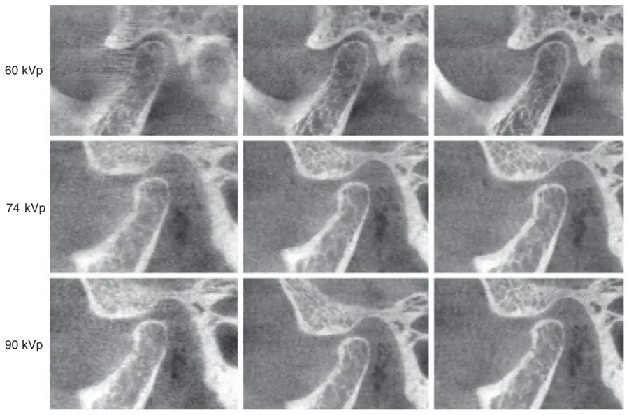
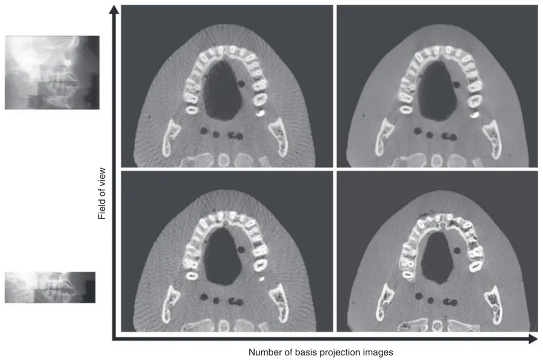

نسخه استخراجشده؛ ترجمه یا تأیید علمی انجام نشده است. وضعیت: captured
حالت غالب حرکت تیوب، اسکن حلزونی یا مارپیچی است — که «اکتساب حجمی» هم نامیده میشود. و شرط فنیاش: فناوری «حلقهی لغزان»، که «اکتساب پیوستهی دادهی پروجکشن در یک حجم سهبعدی از بافت را با چرخش پیوستهی تیوب و آشکارسازها و جابهجایی همزمان بیمار از میان دهانهی گانتری» ممکن میکند.

و چرا «حلزونی»؟ «در حالی که تیوب در یک کمان دایرهای میچرخد، نسبت به بیمار در حال حرکت به نظر میرسد مسیری مارپیچی یا حلزونی را دنبال میکند.»
و اصطلاح تغذیهی میز: «تنگی یا گشادی مارپیچ میان چرخشهای پیاپی منبع — و بنابراین ابعاد وکسل در جهت Z — با سرعت حرکت میز در هر چرخش ۳۶۰ درجه تعیین میشود، که تغذیهی میز نامیده میشود.»
و پیکربندی امروزی: MDCT یا CT چندبرشی. «پرتو پهنتری روی چند ردیف آشکارساز در امتداد محور بلند بدن یا محور z پروجکت میشود. ردیفهای آشکارساز اغلب کانال نامیده میشوند و بسته به سازنده و مدل، از ۶۴ تا ۶۴۰ ردیف متغیرند.» و ردهبندی: ۱۶ کاناله، ۲۰ تا ۴۰ کاناله، ۶۴ تا ۸۰ کاناله، و ممتاز.
و دو فایدهی اصلی چندردیفی بودن:
و پیکربندی دستگاه: یک گانتری (حلقهی بزرگی که تیوب و آشکارساز را در خود دارد) و یک میز متحرک بیمار که در طول اسکن از میان گانتری میلغزد. گانتری «برشهای محوری در امتداد محور z را میگیرد و میتواند زاویه بگیرد تا اسکن کرونال مستقیم بگیرد» — ولی با وکسلهای ایزوتروپیک، «بازسازی در هر صفحهای بدون اعوجاج» ممکن است.
و تیوب MDCT با تیوب دندانی قابل مقایسه نیست: آند چرخان با ظرفیت گرمایی تا ۸ میلیون واحد گرمایی — «مقایسه کن با تیوبهای داخلدهانی دندانی با ۲۰٬۰۰۰ واحد گرمایی». معمولاً ۱۲۰ kVp (دامنه ۸۰–۱۴۰) و جریان ۲۰۰–۸۰۰ mA.
و چرا این خروجی بالا؟ «زمان اکسپوز را کمینه و کیفیت تصویر را با افزایش نسبت سیگنال به نویز بهتر میکند.» و kVp بالا «دامنهی دینامیک گسترده را با کاهش جذب استخوان نسبت به بافت نرم فراهم میکند و عمر تیوب را با کاهش بار آن افزایش میدهد».
و دو مرحله کولیماسیون: «برای کمینه کردن اکسپوز بیمار، پرتو پیش از ورود به بیمار به یک پرتو بادبزنی نازک کولیمه میشود.» و سپس «برای بهبود کیفیت تصویر، پرتو باقیمانده دوباره کولیمه میشود تا فوتونهای پراکنده پیش از رسیدن به آرایه حذف شوند».
و ساختار سهلایهی هر آشکارساز MDCT: یک سینتیلاتور، یک فوتودیود حالت جامد، و یک بستر برای زیرساخت مکانیکی و الکتریکی. سینتیلاتورها معمولاً عدد اتمی بالا دارند — مانند اکسیسولفید گادولینیوم — و «کارایی آشکارسازی بالایی دارند و تقریباً ۹۰٪ فوتونهای فرودی را جذب میکنند».
و دو افزوده: کولیماتور پیشآشکارساز (شبکهی ضدپراکندگی) که «نویز را کم و کنتراست را بهتر میکند»، و فناوری نو: آشکارسازهای شمارندهی فوتون (PhC) که «سینتیلاتور و فوتودیود را با مادهی تبدیل مستقیم جایگزین میکنند» و «نهتنها شمار فوتونها بلکه انرژیشان را هم ثبت میکنند»؛ نتیجه: کار در دوز پایینتر و نسبت کنتراست به نویز بهتر.
میدان دید: پرتو کولیمهشده «باید ناحیهی آناتومیک مورد نظر را در بر بگیرد». FOV استوانهای با قطر و بُعد کرانیوکائودال تعریف میشود. قطر معمول MDCT: ۲۵ سانتیمتر، و برای پروتکلهای ماگزیلوفاسیال، FOV عمودی ۷ تا ۲۵ سانتیمتر «تا کل اسکلت ماگزیلوفاسیال از قاعدهی جمجمه تا زیر مرز تحتانی مندیبل» را در بر بگیرد.

و نمای مکانیاب (اسکات): پیش از اسکن گرفته میشود، «میتواند لترال یا قدامی-خلفی باشد و شبیه پروجکشنهای سر به نظر میرسد». کارش: «تنظیم سفارشی FOV برای کمینه کردن پرتوگیری بیمار» — و برخی روشهای کنترل خودکار اکسپوز از همین نما «برای تخمین جریان تیوب بر پایهی اندازه و آناتومی بیمار» استفاده میکنند.
و تنظیمات اکسپوز: «بیشتر معاینات CT بزرگسال با ولتاژ ۱۲۰ kVp انجام میشوند» و چند پروتکل کودکان kVp پایینتر (۸۰–۱۲۰). «کاهش kVp دوز را کم میکند ولی نویز را بالا و کنتراست را بیشتر میکند.» و روش شایعتر کاهش دوز: «کاهش تنظیم mA»، یا استفاده از AEC که mA را بر پایهی اندازهی بیمار و ناحیهی مورد بررسی خودکار تنظیم میکند.
و ضخامت برش و «بینینگ» — با یک مثال عددی روشن: «کمترین ضخامت برش به پهنای ردیف آشکارساز بستگی دارد.» پس از اکتساب، دادهی ردیفهای مجاور میتواند ترکیب (بینینگ) شود. یک مثال: یک اسکنر ۳۲۰ برشی با دکسلهای ۰٫۵ میلیمتری پهنای پرتو ۱۶۰ میلیمتر دارد (۳۲۰ × ۰٫۵). و همان حجم میتواند بازسازی شود به: ۳۲۰ برش ۰٫۵ میلیمتری، یا ۱۶۰ برش ۱ میلیمتری، یا ۸۰ برش ۲ میلیمتری.
و انتخاب ضخامت با وظیفهی تشخیصی است: «برای معاینات ماگزیلوفاسیال، ارزیابی استخوان معمولاً با برشهای ۰٫۵ میلیمتری انجام میشود، در حالی که برشهای ۱ میلیمتری برای معاینهی بافت نرم کافیاند.»
و پیچ — یک نسبت با پیامدهای سهگانه:
پیچ = مسافت طیشدهی میز در یک چرخش ۳۶۰ درجه ÷ پهنای کولیماسیون پرتو
و کرنلها (فیلترها): «الگوریتمهای پردازش تصویر که برای برجسته کردن ویژگیهای خاص به کار میروند» و «با اثر مورد نظرشان نامگذاری میشوند: بسیار نرم، نرم، متوسط، تیز، و فوق تیز».
و دو نکتهی مهم دربارهی کرنلها: «کرنلها به دادهی اصلی سینوگرام، پیش از بکپروجکشن اعمال میشوند و بازسازیهای جداگانهای تولید میگردد؛ و هر بازسازی باید جداگانه ارزیابی شود.» و مهمتر: «همهی بازسازیها به مجموعهدادهی خام اصلی اعمال میشوند، پس افزودن بازسازیهای بیشتر زمان ساخت را افزایش میدهد ولی هیچ اثری بر دوز پرتو بیمار ندارد.»
و مواد حاجب — که «تقریباً بهطور انحصاری در MDCT» به کار میروند: مواد حاجب داخل وریدی بر پایهی ید، یونی یا غیریونی، با اسمولالیتهی بالا یا پایین. «شایعترین مواد حاجب، غیریونی با اسمولالیتهی پاییناند.»
و چرا کار میکنند؟ «ید عدد اتمی بالایی دارد (Z = ۵۳) و پرتو را بهطور کارآمد با جذب فوتوالکتریک تضعیف میکند و روشن به نظر میرسد.» و کاربردش: «تومورهای بدخیم ماگزیلوفاسیال اغلب عروق بیشتری از بافت طبیعی اطراف دارند؛ پس ید در عروق این بافتها دانسیتهشان را بالا و مرزهایشان را آشکارتر میکند.» و نیز «به دیدن لنفنودهای بزرگشدهی حاوی کارسینومای متاستاتیک کمک میکند».
و اعداد ایمنی — که باید بدانی: نرخ واکنشهای حاد آلرژیکمانند یا فیزیولوژیک برای اسمولالیتهی پایین «بسیار پایین است (تقریباً ۰٫۶٪)» و برای عوامل یونی و غیریونی یکسان — «هرچند عوامل غیریونی نرخ کمتری از واکنشهای خفیف دارند». بروز واکنشهای تأخیری (تا یک هفته) از ۰٫۵٪ تا ۱۴٪. و آسیب حاد کلیه — القاشده (ظرف ۶ ساعت) یا مرتبط (ظرف ۴۸ ساعت) — «بهویژه در بیماران سالمند با نارسایی شدید کلیوی از پیش موجود».